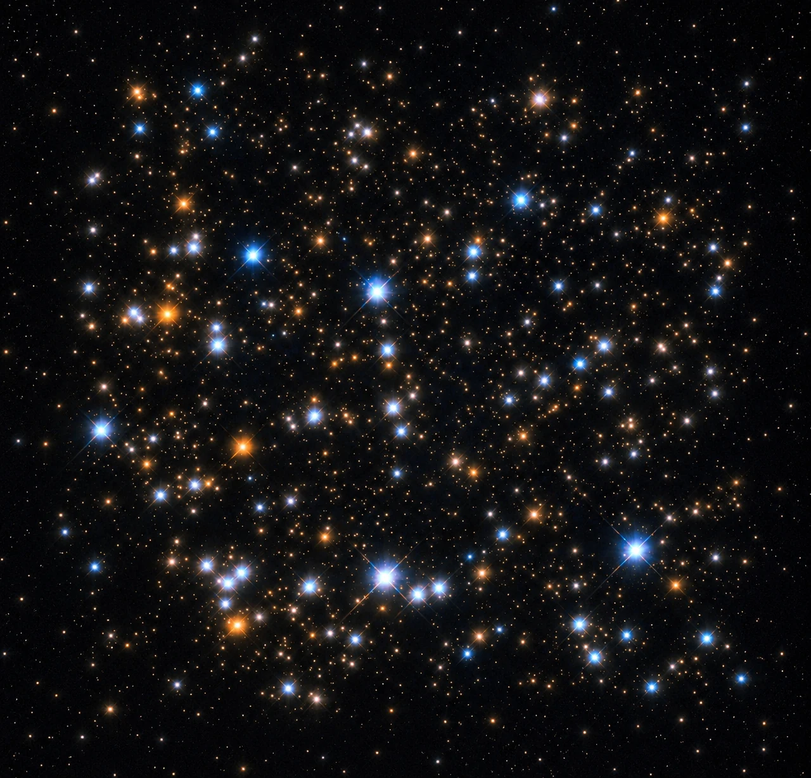
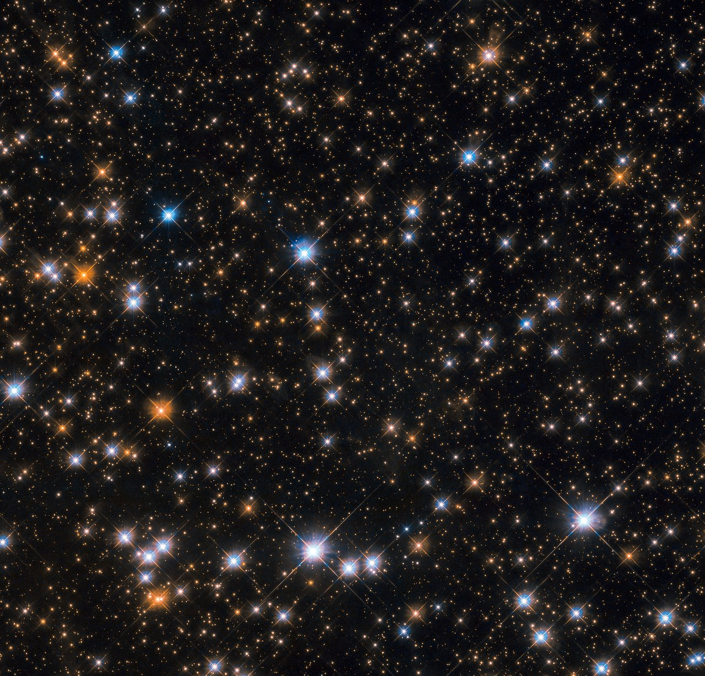
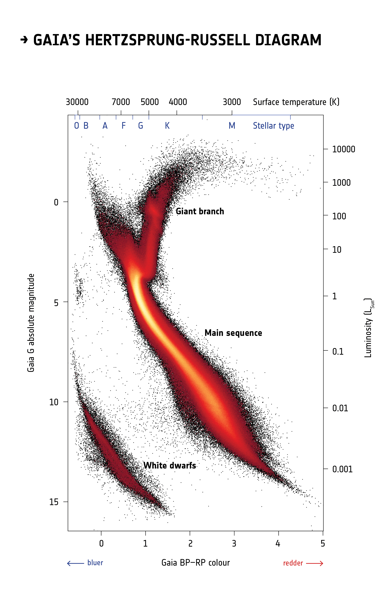

Un gruppo nel cielo, un gruppo nello spazio
Un campo ricco di stelle invita a unire i punti. Ma una figura riconoscibile, un asterismo o una costellazione non sono automaticamente un ammasso. L’ammasso aperto è un insieme fisico di stelle con una storia comune e legami dinamici; il disegno percepito dall’osservatore è soltanto la sua proiezione.
Le stelle possono essersi formate dalla stessa regione di gas in un intervallo relativamente ristretto. «Stessa origine» non significa però massa, luminosità e fase evolutiva uguali. Proprio le differenze di massa trasformano il gruppo in un laboratorio: possiamo confrontare oggetti nati in condizioni collegate e studiare quanto rapidamente attraversano i vari stadi.
Molti ammassi aperti della Via Lattea appartengono al disco e sono giovani rispetto ai globulari più antichi. Esistono anche ammassi aperti con età di miliardi di anni. La categoria non si definisce imponendo a ogni oggetto lo stesso numero di stelle, la stessa età o l’assenza di qualunque concentrazione.
M11: ricco e compatto, ma aperto

Ritrova la fotografia commentata e i suoi riferimenti ↑
Individua alcune stelle brillanti, poi passa alle molte sorgenti deboli fra esse. La ricchezza del campo non dimostra che ogni punto appartenga all’ammasso. Possiamo avere stelle davanti e dietro, e non tutti i membri hanno luminosità sufficiente per comparire nella ripresa.
M11 è un utile antidoto alla regola superficiale «compatto significa globulare». L’immagine e il tipo fisico vanno letti insieme. La classificazione utilizza storia, popolazione e dinamica, non soltanto un’impressione di densità. Nemmeno il nome tradizionale di Ammasso dell’Anitra Selvatica è una misura della sua struttura.
Il colore di una singola stella basta a decidere se appartiene al gruppo?
No. Colore e magnitudine possono aiutare nel confronto con la popolazione, ma estinzione, distanza e stelle di campo introducono ambiguità. Parallasse, moto proprio e velocità radiale aggiungono informazioni decisive. Anche una selezione con questi dati conserva incertezze.
Come riconoscere i membri
La parallasse fornisce un’indicazione della distanza; il misura lo spostamento angolare sul cielo. Stelle appartenenti allo stesso gruppo tendono a occupare una regione coerente di questi parametri, pur con dispersione interna ed errori. La velocità radiale, ricavata dagli spettri, aggiunge la componente lungo la linea di vista.
Il moto proprio non è direttamente una velocità in chilometri al secondo. La stessa velocità trasversale produce uno spostamento angolare minore se la stella è più lontana. Per confrontare moti fisici servono quindi le distanze. Non confondere questi piccoli spostamenti annuali con il rapido moto apparente di tutta la volta celeste dovuto alla rotazione terrestre.
Si possono selezionare candidati in uno spazio di parametri, ma nessun taglio rettangolare elementare certifica ogni appartenenza. Errori correlati, binarie e sovrapposizione del campo richiedono analisi più elaborate. Il laboratorio seguente isola questo problema senza usare dati reali di M11.
Una concentrazione sulla fotografia può includere stelle poste davanti o dietro all’ammasso. La vicinanza apparente è una selezione iniziale, non una certificazione di appartenenza. Parallassi, moti propri e altre misure permettono di cercare una popolazione coerente, tenendo conto delle incertezze. Non pretendiamo che tutti i membri abbiano numeri perfettamente identici: il gruppo occupa uno spazio e possiede una dinamica. Nel laboratorio puoi cambiare il criterio di selezione e osservare quanti intrusi entrano; nel cielo reale serve un confronto di indizi, non un solo confine tracciato intorno ai punti più evidenti.
Laboratorio: una selezione può includere intrusi
Nel modello prova una selezione larga e una più stretta. Cerca il compromesso fra riconoscere il gruppo e includere stelle che gli somigliano soltanto nel dato scelto.
Osserva, confronta, riconosci


Leggi prima gli assi: si confrontano proprietà stellari, non posizioni nel cielo.
ESA/Gaia/DPAC; acknowledgement Carine Babusiaux e collaboratori · CC BY-SA IGO 3.0.Un gruppo apparente può contenere intrusi
Prima scegli un confronto. Poi osserva che cosa cambia e collega l’effetto alla spiegazione.
Il modello richiede JavaScript; il principio e le immagini restano leggibili.
Modello didattico originale AD ASTRA: semplificazioni dichiarate nella figura. Il movimento, quando disponibile, parte solo su richiesta.
Apri il confronto numerico precedente · facoltativo
Due popolazioni assegnate dall’autore, non un catalogo. Centro del gruppo (2, −1) mas/anno; taglio uguale sulle due componenti. Si contano membri recuperati, membri esclusi e intrusi selezionati.
Parti da una finestra stretta: seleziona un gruppo compatto, ma perdi alcuni membri assegnati. Allargala: recuperi altre stelle del gruppo e includi anche sorgenti di campo. Precisione e completezza non sono la stessa cosa. Nessuna immagine può risolvere automaticamente la sovrapposizione in tutti i parametri.
Il campione rivela la classificazione vera perché è costruito. Nel caso reale quella verità non è già scritta accanto a ogni punto: va stimata con dati, errori e modelli. Chiediti quale informazione aggiuntiva potrebbe separare due stelle con moti simili ma distanze differenti.
Il diagramma del gruppo racconta il tempo
Un diagramma colore–magnitudine dell’ammasso confronta i suoi membri. Se la distanza è quasi comune, i flussi si possono interpretare con meno ambiguità rispetto a un campo completamente casuale. Estinzione differenziale, binarie e selezione osservativa restano però rilevanti.
Il punto in cui la sequenza principale si allontana dalla sua forma iniziale, chiamato turn-off, aiuta a stimare l’età mediante il confronto con modelli. Le stelle più massicce evolvono più rapidamente; in un gruppo più vecchio il turn-off riguarda masse inferiori. Non si ricava un’età esatta guardando soltanto «quante stelle sono rosse».
Le isocrone sono curve teoriche per stelle della stessa età, con massa variabile e altre ipotesi specificate. Non sono la traiettoria temporale di un’unica stella. Questa distinzione riprende il diagramma H–R e prepara lo studio dei globulari.
Un ammasso non è un contenitore immobile
Le stelle si muovono nel campo gravitazionale comune. Incontri interni redistribuiscono energia; alcune stelle possono raggiungere condizioni che permettono di lasciare il gruppo. Il campo galattico, passaggi vicino a nubi e perdita di massa stellare contribuiscono all’evoluzione del sistema.
La parola «evaporazione», usata in questo contesto, è una metafora dinamica: non le stelle che si trasformano in vapore. L’ammasso può perdere membri nel tempo, e alcuni sistemi mostrano strutture estese legate alla dispersione. Non tutti si dissolvono nello stesso numero di anni; contano massa, densità, orbita e ambiente.
Una fotografia offre una configurazione momentanea proiettata. Non misura da sola la massa totale o lo stato di legame. Una lista di stelle selezionate fino a una certa magnitudine omette inoltre componenti deboli, rendendo il censimento dipendente dalla sensibilità.
Scegliere campo e ingrandimento
Per un ammasso esteso, un campo troppo piccolo nasconde la struttura del gruppo. Il binocolo può essere più adatto a riconoscere il disegno complessivo, mentre un telescopio permette di separare sorgenti più deboli o ravvicinate. Una maggiore potenza non è automaticamente la vista migliore.
Prepara una carta con stelle limitrofe e controlla l’estensione dell’oggetto. Registra quante stelle riconosci con sicurezza, se esiste una concentrazione e come cambia il campo passando da uno strumento all’altro. Le immagini professionali sono un confronto documentato, non una promessa di identica resa.
Per esercitarti, separa tre colonne nel diario: «forma percepita», «misure o dati di catalogo», «interpretazione fisica». Scrivere che vedi una V riguarda la prima; la coerenza della parallasse riguarda la seconda; l’origine comune è una conclusione da sostenere con più indizi. Questa disciplina rende l’osservazione interessante anche prima di possedere strumenti avanzati.
Dal gruppo osservato alla storia comune
Spiega a un compagno perché due stelle vicine nella fotografia potrebbero non essere vicine nello spazio. Poi descrivi quale combinazione di parallasse, moto proprio e spettro ti aiuterebbe a sostenere l’appartenenza. Se manca un dato, indica l’incertezza senza sostituirlo con l’aspetto più plausibile.
Nella prossima lezione cambieranno scala di concentrazione, popolazioni e contesto galattico. Il metodo rimane: prima osservare una struttura, poi cercare le misure capaci di distinguerne la natura e la storia.
La prossima volta che osservi un ammasso, concediti prima il tempo di apprezzarne la figura. Poi potrai domandarti quali stelle ne fanno davvero parte e come lo abbiamo capito.
Fonti e approfondimenti
Testo e schemi originali AD ASTRA. Le fonti indicate sono riferimenti dei concetti trattati; i modelli sono didattici e dichiarano i propri limiti.